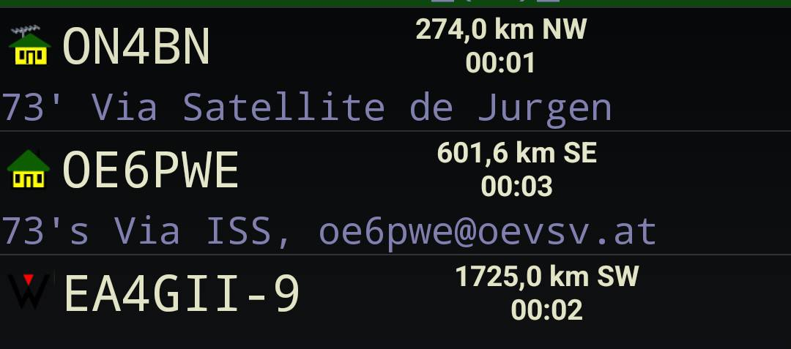
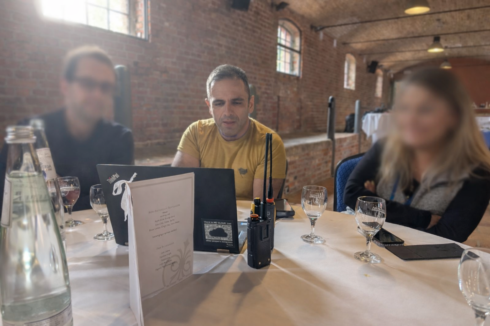
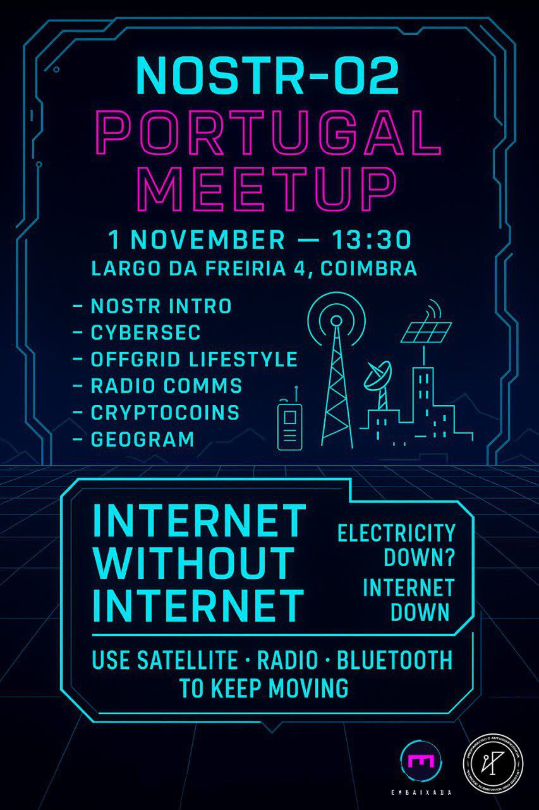

Who we are, how this got started, and where it's going.
Phones are powerful computers. They shouldn't become useless just because there's no cell tower nearby.
I'm a Portuguese software engineer living in Germany. In 2024 I started wondering why two phones sitting right next to each other can't talk to each other without going through some server on the other side of the planet. That felt broken. So I started building something about it.
Find me on NOSTR.
The first version was Android-only, Bluetooth-only. Two phones finding each other, swapping identities, sending messages. No WiFi, no mobile data, no servers. Just two devices doing what they should've been able to do all along.
It grew from there — more platforms, more transports, more apps.
Bluetooth and WiFi only go so far. For everything else, there's radio and satellite.
Geogram speaks APRS — a protocol used by ham radio operators for decades. That means messages can travel over amateur radio frequencies or bounce off satellites. Hundreds, sometimes thousands of kilometers, with zero internet involved.

Places where we've shown up and demoed the thing.
Showed Geogram at a Cypherpunks meetup in Germany. Good crowd — people who actually care about privacy and know their way around cryptographic tools. Got solid feedback on the offline-first approach.

Demoed at the Embaixada during NOSTR-02 in Portugal. Geogram uses NOSTR for identity and relay communication, so this was a good fit. Lots of interesting conversations about decentralized protocols.

How this project stays alive.
So far, everything — code, hardware prototypes, event travel — has been paid for out of pocket by people who think this matters. No sponsors, no grants, just people chipping in.
We'll probably register a company in 2026. Not because we want to — paperwork is nobody's idea of fun — but because having a legal entity makes it easier to hire people and sign contracts. Base of operations split between Portugal and Germany.
Consulting. Help communities, organizations, and town halls set up and run their own geogram networks. The software stays free.
We'll apply for EU grants when it makes sense. VC money? Almost certainly not. Investors want returns, and that pressure tends to wreck projects like this one.
People who've been testing, breaking things, and helping make Geogram better.
One of the earliest testers. Memo has been putting Geogram through its paces on ESP32 devices, testing mesh communication, and reporting bugs since the early days. He set up a German-language Matrix room to bring more people into the conversation and has been hands-on with everything from direct messages to local mesh setups.
When he's not testing comms gear, he's usually out in nature with a camera.
Find him on NOSTR.
Geogram is a small project and we could use the help. Here's what we need.
The website and apps need translations into more languages. If you speak something other than English and want to help, we'd appreciate it.
The whole thing is open source. If you want to fix something, add something, or just poke around, the code is on GitHub.
Got a feature you'd like to see? Something that doesn't work the way it should? Open an issue or start a discussion on GitHub.